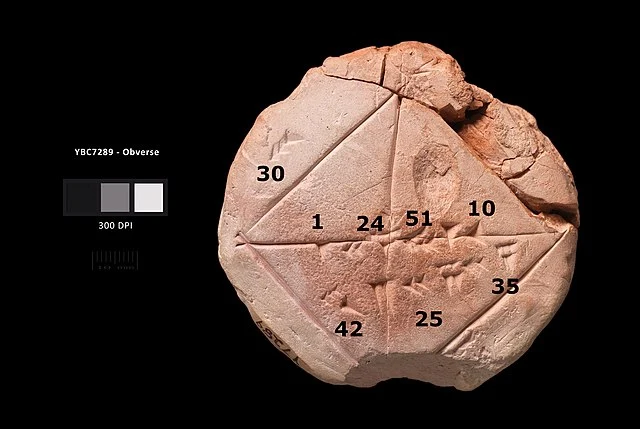

Geometry in Mesopotamia and Egypt
The earliest recorded beginnings of geometry can be traced to ancient Mesopotamia and Egypt
in the 2nd millennium BC.Early geometry was a collection of empirically discovered principles
concerning lengths, angles, areas, and volumes, which were developed to meet some practical
need in surveying, construction, astronomy, and various crafts.
The earliest known texts on geometry are the Egyptian Rhind Papyrus (2000–1800 BC) and
Moscow Papyrus (c. 1890 BC), and the Babylonian clay tablets, such as Plimpton 322 (1900 BC).
For example, the Moscow Papyrus gives a formula for calculating the volume of a truncated pyramid,
or frustum. Later clay tablets (350–50 BC) demonstrate that Babylonian astronomers implemented
trapezoid procedures for computing Jupiter's position and motion within time-velocity space.